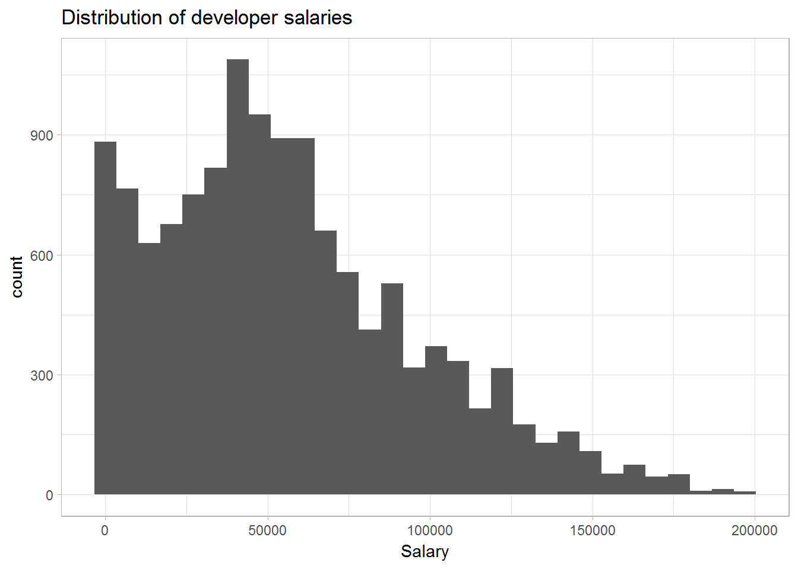
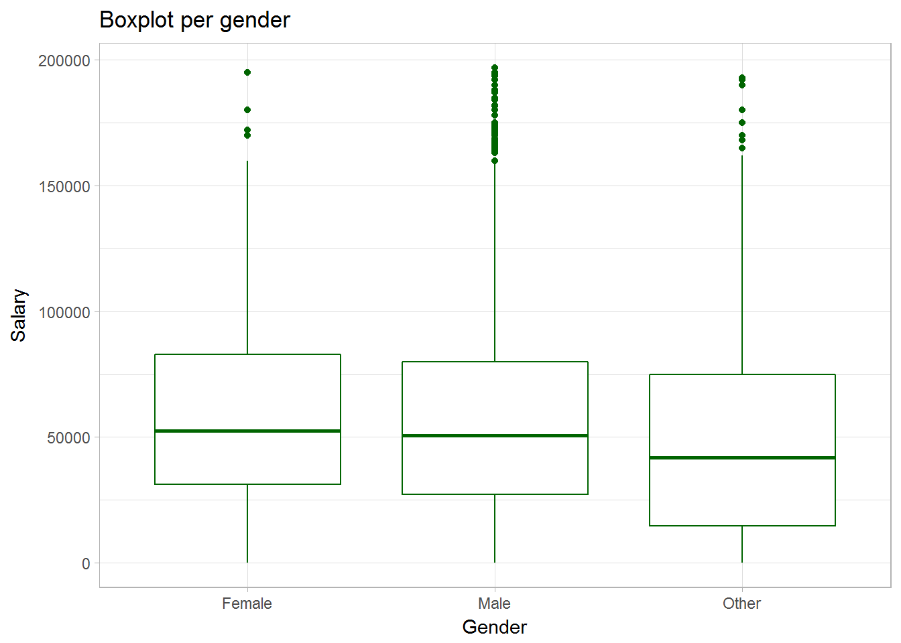
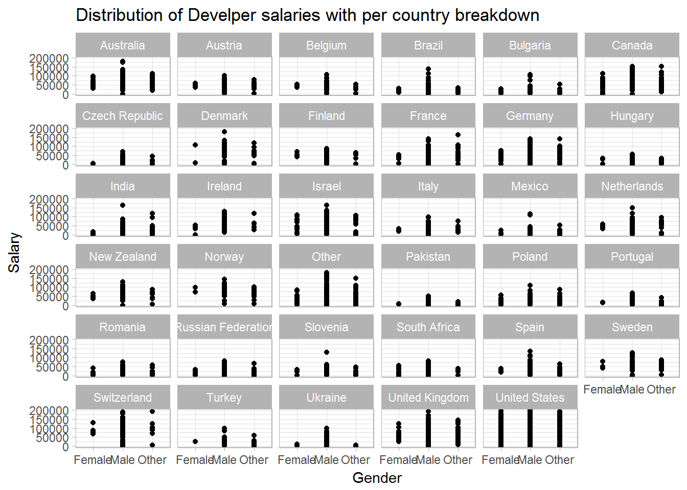
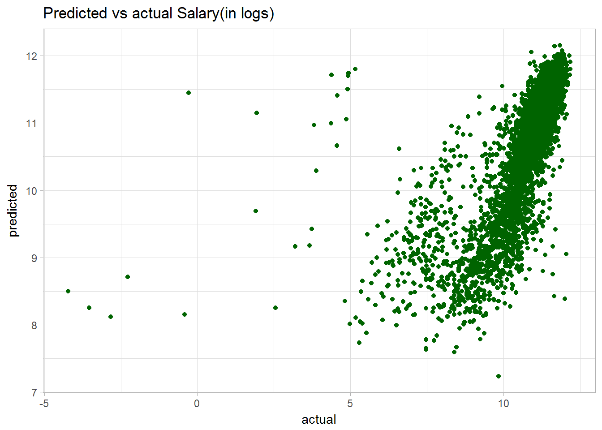

Task 1:
Predict developer salaries using the Stackoverflow Annual Developer Survey 2017. The dataset is downloaded from Kaggle.
library(data.table)
library(caret)
library(ggplot2)
data <- fread("data\\survey_results_public_selected.csv")Data cleaning is an essential part of the data analytics process. We need to be aware of missing values for some variables, we would like to differentiate between different countries and how often we have them in our dataset. We would aslo like clean the data from unintuitive values.
data <- data[!is.na(Salary) & Salary > 0]
data <- data[complete.cases(data)]
data <- data[, Gender := ifelse(Gender == "Male", "Male",
ifelse(Gender == "Female", "Female", "Other"))]
# filter for large countries
large_countries <- data[, .N, by = "Country"][N > 60][["Country"]]
data <- data[, Country := ifelse(Country %in% large_countries, Country, "Other")]ggplot(aes(Salary), data = data) + geom_histogram() +
ggtitle("Distribution of developer salaries") + theme_light()## `stat_bin()` using `bins = 30`. Pick better value with `binwidth`.
The distribution of the salaries is positively skewed with a long right tail. The peak is around 50 000$, however there are few extreme values in the higher ranges.
ggplot(data, aes(Gender, Salary)) +
geom_boxplot(colour = "darkgreen", fill = "white") + ggtitle("Boxplot per gender") +
theme_light()
We see that in all countries, regardless of gender, developers on average get paid approximately the same salary. The median is similarly the same for males and females (around 50 000$), while the “other” category (which stands for missing data?) is slightly lower. Another observation that should be pointed out is that the upper whisker is more populated for males than for females. This suggests different salary range. Let’s investigate more.
ggplot(aes(Gender, Salary), data = data) + geom_point() + facet_wrap( ~ Country) +
ggtitle("Distribution of Develper salaries with per country breakdown") + theme_light()
We see that in all countries, the range of salaries that male developers earn is larger than the respective wage range for females.
We will train two predictive models to predict the logarithm of Salary using the caret package.
# create log_salary
data <- data[, log_salary := log(Salary)]
# create training and test set
training_ratio <- 0.7
set.seed(1234)
train_indices <- createDataPartition(y = data[["log_salary"]],
times = 1,
p = training_ratio,
list = FALSE)
train_set <- data[train_indices, ]
test_set <- data[-train_indices, ]# set the cross validation -10 folds
set.seed(1234)
train_control <- trainControl(method = "cv", number = 10)Linear model
# linear model with all variables as explanatory apart from Salary
linear_fit <- train(log_salary ~ . -Salary, method = "lm", data = train_set,
trControl = train_control)
# linear_fit performance
# RMSE Rsquared MAE
# 0.9569742 0.4973999 0.5446188Regression Tree
# a regression tree
tune_grid <- data.frame("cp" = c(0.01, 0.001, 0.0001, 0.00001, 0.000001))
set.seed(1234)
rpart_fit <- train(log_salary ~ . -Salary,
data = train_set,
method = "rpart",
trControl = train_control,
tuneGrid = tune_grid)
#rpart_fit
# cp RMSE Rsquared MAE
# 1e-06 1.0176615 0.4389875 0.5844119
# 1e-05 1.0171127 0.4394886 0.5838310
# 1e-04 1.0127748 0.4430201 0.5789464
# 1e-03 0.9898655 0.4626986 0.5733854 # WINNER among regression trees with lowest RMSE.
# 1e-02 1.0631265 0.3795067 0.6406908
# The final value used for the model was cp = 0.001.It seems that with 10-fold cross validation, the lin regression has better performance on training dataset.
Check out the performance on test set of the better model - lin reg
linear_rmse_test <- RMSE(predict.train(linear_fit, test_set),
test_set[["log_salary"]])
linear_rmse_test ## [1] 0.9636814The RMSE on test set of the linear model is 0.9636814, which is a bit higher than the RMSE of the training set.
predicted <- predict.train(linear_fit, test_set)
ggplot(test_set, aes(test_set$log_salary, predicted)) + geom_point(color = "darkgreen") +
labs(x = "actual", y = "predicted") + theme_light() + ggtitle("Predicted vs actual Salary(in logs)")
The graph shows us a clear positive relationship between actual and redicted values of log_salary. If our model was perfect, then we would have observed a straight 45 degree line.
Task 2:
Compare performance of LOOCV & k-fold CV on the Titanic dataset to predict whether a person survived by employing logistic regression.
Some thoughts on the topic:
A disadvantage when we use a k-fold cross validation is that we might create a model that works perfectly on a given dataset, but performs poorly on another one (i.e., “overfitting” issue). Nevertheless, since it is an exhaustive model training the data on all data points but one, it would show us various performances given all possible combinations of our observations, hence the “real” performance of the model. Also, the bias is smaller compared to when we employ k-fold cross validation.
library(titanic)
data_train <- data.table(titanic_train)
# recode Survived to factor - needed for binary prediction
data_train[, Survived := factor(ifelse(Survived == 1, "survived", "died"))]# define training set
set.seed(1234)
train_control <- trainControl(method="loocv", classProbs = TRUE)
# train the model
#install.packages('e1071', dependencies=TRUE)
library(e1071)
set.seed(1234)
model_1 <- train(Survived ~ Fare + Sex, data=data_train,
trControl=train_control, method="glm", family = "binomial")## Warning in nominalTrainWorkflow(x = x, y = y, wts = weights, info =
## trainInfo, : There were missing values in resampled performance measures.# summarize results
# model_1
# Accuracy Kappa
# 0.7822671 0 set.seed(1234)
train_control_2 <- trainControl(method="cv", number=10)
# train the model
model_2 <- train(Survived ~ Fare + Sex, data=data_train,
trControl=train_control_2, method="glm", family = "binomial")
# summarize results
# model_2
# Accuracy Kappa
# 0.7834207 0.5375082Accuracy of the 10-fold cross validation model is greater, which was unexpected.
Compare the accuracy of the model estimated by two resampling methods
summary(model_1$resample)## Accuracy Kappa Resample
## Min. :0.0000 Min. :0 Length:891
## 1st Qu.:1.0000 1st Qu.:0 Class :character
## Median :1.0000 Median :0 Mode :character
## Mean :0.7823 Mean :0
## 3rd Qu.:1.0000 3rd Qu.:0
## Max. :1.0000 Max. :0
## NA's :697# mean = 0.7823
summary(model_2$resample)## Accuracy Kappa Resample
## Min. :0.7191 Min. :0.4017 Length:10
## 1st Qu.:0.7640 1st Qu.:0.5000 Class :character
## Median :0.7809 Median :0.5224 Mode :character
## Mean :0.7834 Mean :0.5375
## 3rd Qu.:0.7949 3rd Qu.:0.5551
## Max. :0.8652 Max. :0.7045# mean = 0.7834The quantiles of the accuracy measures of LOOCV extreme (either 0 or 1) because of the fact that we leave out only 1 observation as a test set - meaning that it would be either predicted a 1 or 0 (true/false).